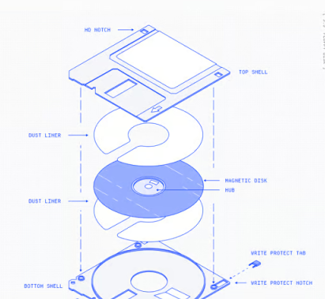

Have you ever wondered how a touch screen knows you are touching it? Well, it has these layers of transparent metal electrodes embedded in the display.
When your finger gets close to the screen it causes a disturbance in the magnetic field that the electrodes sense.
Because the electrodes are laid out on a grid, they can report back the x and y co-ordinates of the disturbance to the operating system. Pretty neat.
Or maybe you’ve wondered why we call it a Gaussian blur. When we blur an image, we look at all the neighbouring pixels and multiply them by a matrix of weights called a kernel.
